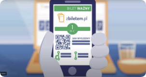
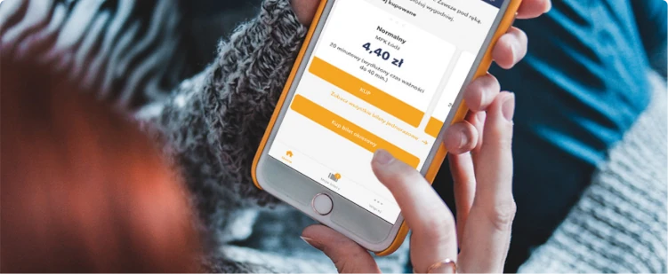

zBiletem to najprostsza aplikacja do kupowania biletów komunikacji miejskiej. Bez względu na
to czy
jeździsz transportem publicznym regularnie czy sporadycznie, w tej apce kupisz bilet najwygodniej.
Szybciej niż w biletomacie.
Wybierz bilet w aplikacji
Zapłać w kilka sekund
Jedź bez stresu

Najprostszy sposób na bilety
Kolejka do biletomatu lub kasy? Nie zawracaj sobie tym głowy! Wszystko czego potrzebujesz
masz w smartfonie. Koniec z nerwowym poszukiwaniem biletu - teraz możesz mieć go zawsze pod ręką. Do
wyboru masz wiele metod płatności. Najwyższy czas podróżować wygodniej zbiletem. Możesz też kupić bilet
okresowy dla bliskiej osoby w naszym sklepie internetowym, a ona pobierze go w apce.

Bilety w aplikacji
Czy wiesz, że liczba biletów kupowanych w aplikacjach mobilnych stale rośnie?
Bilety kupuje się szybko i bezpiecznie a w przypadku kontroli są zawsze pod ręką. Pobierz
zBiletem jeśli potrzebujesz prostego i funkcjonalnego narzędzia do zakupu biletów
komunikacji miejskiej. Po wybraniu metody płatności przy pierwszym zakupie, kupno kolejnego
biletu
to tylko 3 kliknięcia i 10 sekund. Aktywny bilet w aplikacji możesz okazać do kontroli nawet
offline. Niezależnie czy korzystasz z ZTM, MPK czy MZK, zBiletem to dla Ciebie idealny
kompan w podróży.
O tej aplikacji
Aplikacja zbiletem jest polecana przez 70% użytkowników i użytkowniczek. Wiesz
dlaczego? Rozwijamy ją wspólnie od 2015 roku. Osoby korzystające z apki zBiletem doceniają w
niej głównie prostotę i szybkość działania. Można w niej płacić za bilety z przedpłaconego
portfela, Google Pay, Apple Pay, Blikiem i kartą płatniczą. Działamy w ponad 60 miastach w
Polsce. Każdego dnia tysiące osób podróżuje wygodniej z biletem miesięcznym w tej aplikacji.
W każdym miesiącu w tej apce kupowanych jest setki tysięcy biletów czasowych i
jednorazowych. Z aplikacją zBiletem nie musisz się martwić czy biletomat będzie działał.
Masz swój własny, w kieszeni.
Dla miast i operatorów
zbiletem to rozwiązanie dla miast, gmin i operatorów publicznego transportu
zbiorowego. Dostarczamy i utrzymujemy kompleksowe rozwiązanie do sprzedaży, aktywacji i
kontroli biletów mobilnych zwiększając wpływy ze sprzedaży biletów. Cały system obejmuje:
aplikację mobilną użytkownika, sklep internetowy, panel zarządczy, aplikację kontrolerską
oraz szereg API do współpracy z rozwiązaniami innych dostawców. Aplikacja zBiletem może być
wdrożona w warunkach dużego jak i małego miasta w ciągu kilku tygodni. To tańszy w
porównaniu z innymi, wymagającymi obsługi personelu lub drogiego sprzętu, kanał dystrybucji
biletów w transporcie publicznym.
Wśród rozwiązań Infospread znajdziesz także pierwszy w Polsce system aktywacji biletów
mobilnych w oparciu o kody QR w pojazdach.
Twoje bilety mogą się znaleźć w aplikacji zbiletem.pl już za kilka tygodni.
Napisz na kontakt@zbiletem.pl aby umówić spotkanie
lub
rozmowę.
Często zadawane pytania
Jeśli masz jakiekolwiek pytanie dotyczące korzystania z naszej aplikacji, napisz do nas. Zanim to
zrobisz, sprawdź jednak poniższą listę często zadawanych pytań. Być może znajdziesz tu odpowiedź na
Twoje pytanie.
Najczęściej przyczyną braku biletu w aplikacji jest błędny numer telefonu podany
podczas zakupu. Jeśli nie widzisz swojego biletu, skontaktuj się z nami przez e-maila
na adres kontakt@zbiletem.pl lub media społecznościowe
podający poprawny numer telefonu i adres e-mail podany podczas zakupu biletu. Poprawimy numer
dla Ciebie i damy znać.
Czasami transakcje zakupu są anulowane np. z uwagi na zbyt długi czas procesowania. Wtedy bilet
nie jest generowany, ale Twój bank może chwilowo pokazywać obciążenie rachunku. W takiej
sytuacji zwrot pieniędzy
powinien być zrobiony automatycznie.
Poczekaj kilka godzin lub następnego dnia sprawdź swój rachunek. Jeśli nie otrzymasz zwrotu,
koniecznie skontaktuj się z nami na kontakt@zbiletem.pl
podając numer telefonu i datę transakcji. Wyjaśnimy i na pewno środki wrócą do Ciebie.
Dodaną kartę płatniczą można usunąć podczas kupowania biletu jednorazowego. Wystarczy, że
wejdziesz na widok wyboru metod płatności i w tym miejscu usuniesz kartę. Pamiętaj, że nie mamy
danych Twojej karty, przetwarza je bezpiecznie operator płatności z którym współpracujemy.
W większości miast sam zakup biletu jest jego aktywacją i nie musisz robić nic więcej. Są jednak
miasta w których kupiony bilet trzeba aktywować, np. w Warszawie, gdzie bilety jednorazowe i
czasowe trzeba aktywować poprzez skanowanie kodu QR, który znajdziesz na specjalnych naklejkach
w pojazdach lub na bramkach w metrze.
Bilety okresowe aktywuje się tylko w Rybniku i Jastrzębiu-Zdroju, przy każdym przejeździe.
W pojazdach znajdują się naklejki zbiletem, na których umieszczony jest kod QR i tag NFC.
Możesz zeskanować kod na naklejce lub zbliżyć do niej telefon z NFC. Wtedy bilet staje się
aktywny
i zmieni kolor. W innych miastach, bilety okresowe aktywują się zgodnie z wybraną datą
początkową
i/lub godziną zakupu
Niestety nie. zbiletem i Migawka MPK to odrębne systemy. Pamiętaj jednak że zbiletem oficjalnie
działa w Łodzi i bilety w apce dają Ci takie same uprawnienia jak te na karcie plastikowej
Migawka. Zachęcamy więc do kupna kolejnej migawki w naszej apce.
Bilet okresowy zakupiony poza aplikacją/stroną internetową zbiletem, nie może zostać
przeniesiony do aplikacji. Zachęcamy do zakupu kolejnego biletu przez naszą apkę.
Niestety nie. Bilet okresowy jest przechowywany w aplikacji, więc przy kontroli jest ona
niezbędna.
Na adres mailowy wysyłamy potwierdzenie zakupu biletu, które nie jest traktowane jak aktywny
bilet.
Wyjątkiem jest Słupsk, gdzie potwierdzenie biletu działa jak aktywny bilet.
Bez obaw, wszystko da się poprawić. Jeśli przy zakupie biletu wkradł się błąd w danych pasażera
albo została zaznaczona błędna data rozpoczęcia biletu, napisz do nas e-mail na adres
kontakt@zbiletem.pl lub znajdź nas w social mediach.
Podaj poprawne dane a my się tym zajmiemy i damy Ci znać.
Zwroty biletów są możliwe zgodnie z regulaminem zwrotów, który obowiązuje w danym mieście.
Zajrzyj na zbiletem.pl/zwrot i sprawdź jak jest w
Twoim mieście.
Jeśli chcesz zwrócić swój bilet napisz do nas na kontakt@zbiletem.pl.
Prosimy o numer PESEL pasażera, aby jednoznacznie określić właściciela biletu imiennego i
zidentyfikować również podczas kontroli.
Dzięki temu, nawet jeśli masz problem z telefonem, lub rozładuje Ci się bateria, możesz
spokojnie podróżować ponieważ w części miast
możemy sprawdzić ważność Twojego biletu właśnie poprzez numer PESEL. Twoje dane są bezpieczne i
przetwarzane wyłącznie w celu obsługi
klienta i realizacji naszych zobowiązań wobec Ciebie. Kontroler nie ma dostępu do Twoich danych
poza momentem kontroli.
W niektórych miastach, jeżeli rozładowała Ci się bateria w telefonie, pokaż kontrolerowi
dokument tożsamości z numerem PESEL.
To wystarczy żeby sprawdzić czy masz ważny bilet. Kontrola biletów poprzez numer PESEL nie może
być zrealizowana w miastach:
Rybnik, Jastrzębie -zdrój, Gdańsk, Gdynia, Sopot, Wejherowo, w pociągach przewozów regionalnych
w Łodzi.
Pamiętaj też, że w wielu autobusach i pociągach są gniazda USB więc dobrze mieć przy sobie
ładowarkę na czarną godzinę.
Chcesz korzystać z apki, ale Twojego miasta jeszcze nie ma na naszej liście? Napisz do nas,
jakie miasta powinny się u nas znaleźć, a my zrobimy wszystko aby tak się stało :).
MASZ INNE PYTANIE?
Napisz do nas nas e-mail na kontakt@zbiletem.pl. Możesz
skorzystać z tego formularza. Znajdziesz nas też w mediach
społecznościowych. Zwykle odpowiadamy bardzo szybko.
O nas
Lubimy miasta przyjazne ludziom. Z dobrym powietrzem i wygodnym transportem. Zbiletem.pl to
odpowiedź na nasze potrzeby dotyczące prostego i wygodnego dostępu do biletów na transport publiczny.
Bez kolejek,
wizyt w punktach sprzedaży, wniosków i całej tej walki, która dzięki dostępnej technologii wydawała nam
się totalnie zbędna.
Zespół zbiletem.pl to doświadczone specjalistki i specjaliści. Projektujemy, kodujemy i testujemy
nasz produkt najlepiej jak potrafimy, aby dostarczać niezawodne i wygodne rozwiązanie dla ludzi
korzystających regularnie z transportu publicznego. Staramy się być z Wami w kontakcie i słuchamy
Waszych opinii. Jeśli korzystasz z naszej apki i mówisz o niej dobrze, to miód na nasze serce.
Bardzo Ci dziękujemy.